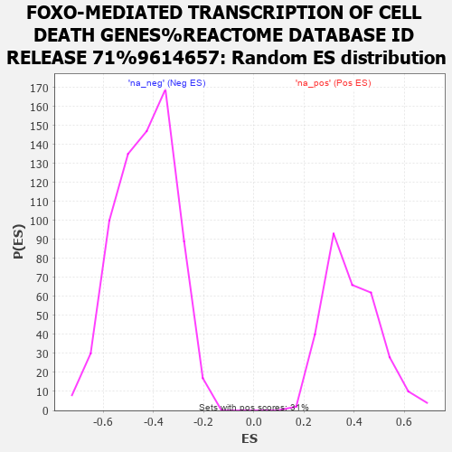

| | | Dataset | MBD2KO_post.rnk |
| Phenotype | NoPhenotypeAvailable |
| Upregulated in class | na_pos |
| GeneSet | FOXO-MEDIATED TRANSCRIPTION OF CELL DEATH GENES%REACTOME DATABASE ID RELEASE 71%9614657 |
| Enrichment Score (ES) | 0.82730985 |
| Normalized Enrichment Score (NES) | 2.1247516 |
| Nominal p-value | 0.0 |
| FDR q-value | 0.0036335767 |
| FWER p-Value | 0.042 |
Table: GSEA Results Summary
 Fig 1: Enrichment plot: FOXO-MEDIATED TRANSCRIPTION OF CELL DEATH GENES%REACTOME DATABASE ID RELEASE 71%9614657
Fig 1: Enrichment plot: FOXO-MEDIATED TRANSCRIPTION OF CELL DEATH GENES%REACTOME DATABASE ID RELEASE 71%9614657
Profile of the Running ES Score & Positions of GeneSet Members on the Rank Ordered List
| PROBE | GENE SYMBOL | GENE_TITLE | RANK IN GENE LIST | RANK METRIC SCORE | RUNNING ES | CORE ENRICHMENT | | 1 | FOXO3 | | | 46 | 11.493 | 0.1647 | Yes |
| 2 | BBC3 | | | 191 | 8.749 | 0.2826 | Yes |
| 3 | BCL6 | | | 214 | 8.479 | 0.4049 | Yes |
| 4 | DDIT3 | | | 277 | 7.645 | 0.5123 | Yes |
| 5 | FOXO4 | | | 351 | 7.059 | 0.6104 | Yes |
| 6 | STK11 | | | 416 | 6.568 | 0.7020 | Yes |
| 7 | EP300 | | | 818 | 4.294 | 0.7369 | Yes |
| 8 | CREBBP | | | 848 | 4.148 | 0.7955 | Yes |
| 9 | CITED2 | | | 1137 | 3.220 | 0.8226 | Yes |
| 10 | NFYA | | | 1871 | 1.697 | 0.7965 | Yes |
| 11 | PINK1 | | | 1910 | 1.644 | 0.8179 | Yes |
| 12 | BCL2L11 | | | 2077 | 1.432 | 0.8273 | Yes |
| 13 | NFYC | | | 6379 | -0.351 | 0.5342 | No |
| 14 | FOXO1 | | | 6424 | -0.363 | 0.5364 | No |
| 15 | NFYB | | | 8979 | -1.300 | 0.3783 | No |
Table: GSEA details [plain text format]

Fig 2: FOXO-MEDIATED TRANSCRIPTION OF CELL DEATH GENES%REACTOME DATABASE ID RELEASE 71%9614657: Random ES distribution
Gene set null distribution of ES for FOXO-MEDIATED TRANSCRIPTION OF CELL DEATH GENES%REACTOME DATABASE ID RELEASE 71%9614657